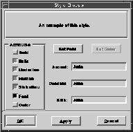

Style Chooser
The style chooser provides a common interface to the user for specifying styles for text in text items. The style chooser, shown in Figure 80, can be created and used by any Galaxy application and is the recommended method for requesting text styles from the user.

Figure 80. A style chooser
To apply styles to text, the text must first be selected in the text item. With the style chooser, the user has the choice of interactively specifying the following text attributes using tri-state check boxes:
The style chooser also contains two check boxes for specifying font and color. Selecting the Font or Color check boxes enables the Set Font or Set Color buttons. The user presses these buttons to open a font chooser and a color chooser. These choosers further define the appearance of selected text in the text item. (The font chooser and the color chooser are also stand-alone Galaxy choosers.)
The style chooser has three fields to define the ascent, descent, and size of selected text in a text item. Ascent is the amount type rises above the base line; descent is the amount type descends below the base line. Size represents the font size. These fields are initially set to Auto; the default values of the font define the attribute. To override the default values for selected text, the user enters a value, in points, in the appropriate fields. For more information on ascent, descent, and other attributes of text, refer to the Text chapter.
To use the style chooser, you need to write an apply function. Example 144 shows an apply function that changes the style of selected text in a text item.
Tri-state check boxes have three states: select, unselect, or no selection. The select state applies the specified text attribute to highlighted text. The unselect state removes the specified attribute. The no selection, or "fuzzy" state, leaves the current attribute unchanged. Key Functionality
This section contains an example to help you get started using the style chooser in an application. Rather than exploiting all of the features of the style chooser, this example demonstrates the most useful base-level routines.
Table of Contents
Help Map
Need help? Contact Visix.